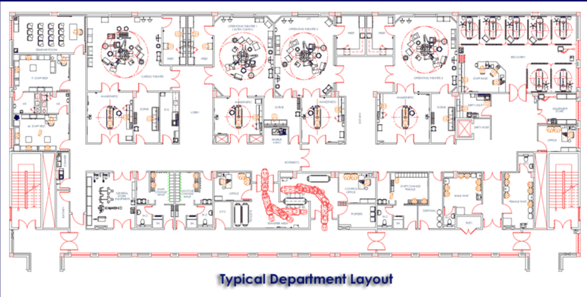
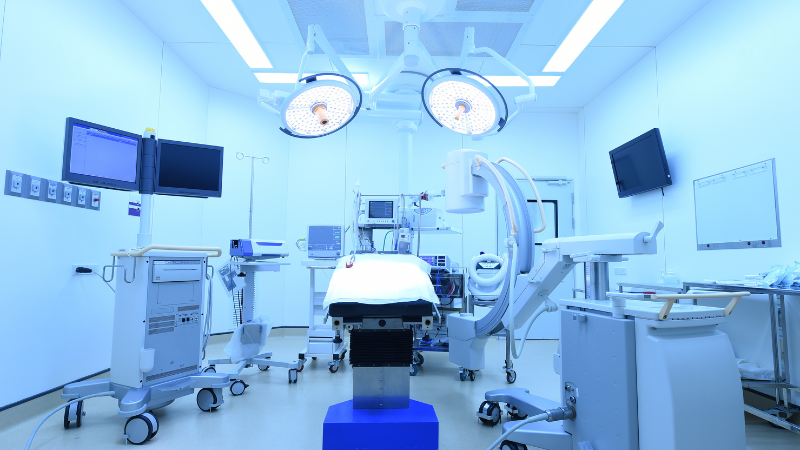
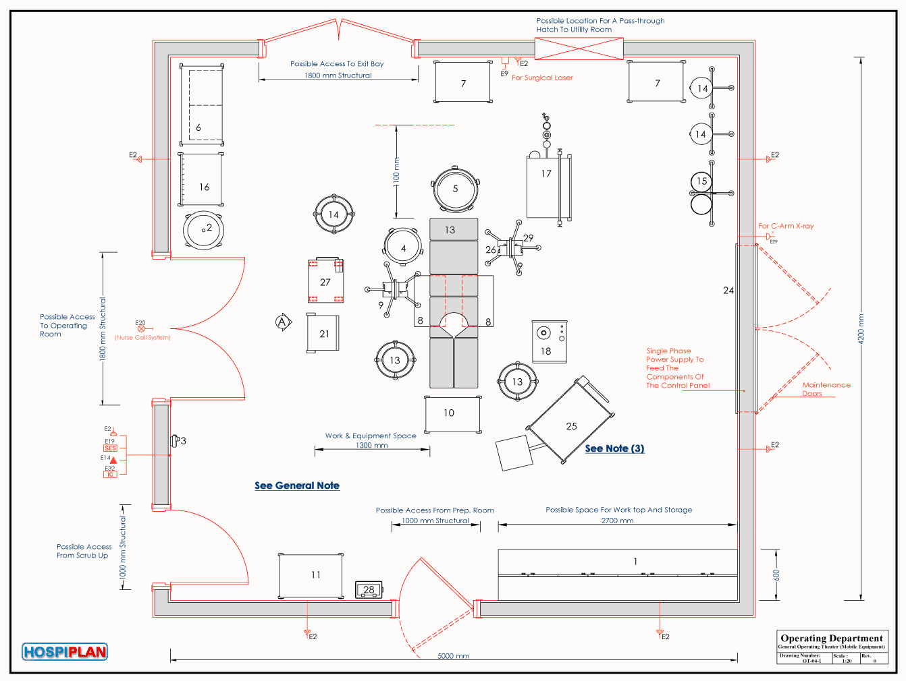

Hospital
Acceso
Servicio de Cirugía
Próximamente
Próximamente
Ingeniería Hospitalaria y Clínica

Área destinada a la realización de procedimientos quirúrgicos y actividades relacionadas.


En esta sección se incorporará posteriormente la normativa correspondiente.